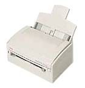

Лазерный
принтер относится к строчным безударным печатающим устройствам, использующим
электрографический способ создания изображения.
Основные характеристики
Разрещающая
способность — до 1200 dpi. Стандартное значение для офисных принтеров —
600 dpi.
Скорость
печати — 4–6 страниц в минуту (принтеры малого быстродействия), 7–11 стр/мин
(принтеры среднего быстродействия), более 12 стр/мин (сетевые принтеры).
Формат
бумаги — А4, А3.
Функциональные
возможности: технология повышения разрешающей способности, встроенные масштабируемые
шрифты, собственная оперативная память с возможностью ее расширения.
Ресурс
заправки — от 3000 до 5000 копий формата А4 при 10% заполнении (печать
текста).
Основные
компонентны устройства — фотопроводящий цилиндр (печатающий барабан), полупроводниковый
лазер, оптико-механическая система перемещения луча.
Технология печати
Для переноса
изображения на бумагу используется специальный порошок — тонер.
На барабане
создается электростатический заряд. Луч лазера с помощью вращающегося зеркала
разворачивается по строке, формируемой на поверхности барабана. Мигание
луча для получения изображения обеспечивается электроникой. В освешаемой
зоне барабана заряд "стекает" с его поверхности. Таким образом, освещаемые
и неосвещаемые участки поверхности барабана имеют разный заряд. В зависимости
от заряда частицы тонера прилипают к барабану. После формирования
строки барабан поворачивается шаговым двигателем на новую строку; это смещение
соответствует разрешающей способности принтера. В результате на барабане
построено изображение и он покрыт тонером.
Подаваемый
лист бумаги заряжается таким образом, чтобы тонер с барабана прилип к листу.
При протягивании листа порошок переходит на бумагу. После этого изображение
закрепляется путем нагрева порошка до температуры плавления. Окончательная
фиксация изображения осуществляется прижимными резиновыми роликами.
Основные
производители лазерных принтеров — Hewlett Packard (HP), Lexmark, Canon,
Epson.
LED-принтер
LED-принтер
(Light Emitting Diode) является аналогом лазерного принтера. Его отличие
в том, что полупроводниковый лазер заменен гребенкой светодиодов. Поэтому
в конструкции отсутствует и сложная оптическая система зеркал и линз.
Основные
производители LED-принтеров — фирмы Okidata и Fujitsu. |
 |